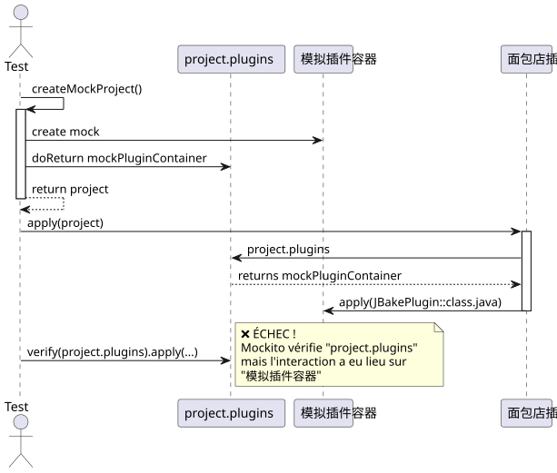
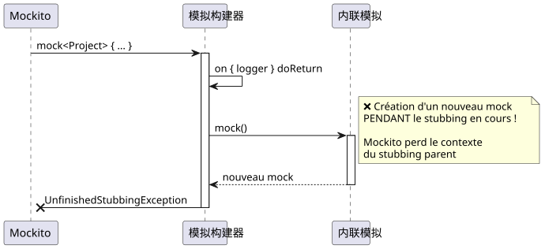
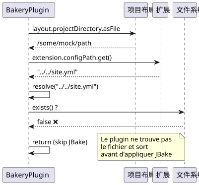
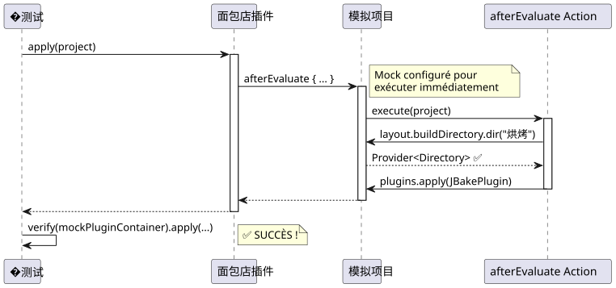

调试 Mockito：解决 Gradle 插件测试中的 "Wanted but not invoked" 错误
Publié le 17 November 2024
介绍
在开发 Gradle 插件期间面包店对于我的 JBake 博客，我遇到了一个看似简单的问题：一个单元测试在出现错误时失败`Wanted but not invoked`. 这似乎是一个琐碎的 bug，结果却是一个完美的案例，用于理解使用 Mockito 和 Kotlin 进行模拟的细微差别。
在这篇文章中，我将带您踏上一次系统的调试之旅，每个解决方案都会揭示一个新问题，直至最终的解决。
上下文：Gradle Bakery 插件
Bakery 插件是围绕 JBake 的包装器，它简化了静态网站的发布。以下是其简化的结构：
class BakeryPlugin : Plugin<Project> {
override fun apply(project: Project) {
val extension = project.extensions.create(
"bakery",
BakeryExtension::class.java
)
project.afterEvaluate {
if (!project.layout.projectDirectory.asFile
.resolve(extension.configPath.get()).exists()) {
println("config file does not exists")
} else {
// C'EST ICI QUE ÇA SE PASSE
project.plugins.apply(JBakePlugin::class.java)
val site = FileSystemManager.from(project, extension.configPath.get())
// Configuration de JBake...
}
}
}
}失败的测试很简单 :
@Test
fun `plugin applies jbake gradle plugin`() {
val project = createMockProject()
val plugin = BakeryPlugin()
plugin.apply(project)
verify(project.plugins).apply(JBakePlugin::class.java)
}错误：
Wanted but not invoked:
pluginContainer.apply(class org.jbake.gradle.JBakePlugin);
Actually, there were zero interactions with this mock.问题 #1：验证错误的模拟
�诊断

问题：Mockito 无法追踪交互在`project.plugins`因为这只是一个返回真实 mock 的 getter`mockPluginContainer`. 验证必须直接在 mock 实例上进行。
解决方案
修改`createMockProject()`为了返回两个对象：
private fun createMockProject(): Pair<Project, PluginContainer> {
val mockPluginContainer = mock<PluginContainer>()
val mockProject = mock<Project> {
on { plugins } doReturn mockPluginContainer
}
return Pair(mockProject, mockPluginContainer)
}并调整测试：
@Test
fun `plugin applies jbake gradle plugin`() {
val (project, mockPluginContainer) = createMockProject()
val plugin = BakeryPlugin()
plugin.apply(project)
// ✅ Vérification directe sur le bon mock
verify(mockPluginContainer).apply(JBakePlugin::class.java)
}问题 #2：级联的 UnfinishedStubbingException
�诊断
在应用第一次修正后，出现了新的错误：
UnfinishedStubbingException:
Unfinished stubbing detected here
Hints:
3. you are stubbing the behaviour of another mock inside
before 'thenReturn' instruction is completed有问题的代码使用了 Mockito-Kotlin 的 DSL 语法：
val mockProject = mock<Project> {
on { extensions } doReturn mockExtensionContainer
on { plugins } doReturn mockPluginContainer
on { logger } doReturn mock() // ❌ PROBLÈME ICI !
}
解决方案
创建所有所有 mocks 在任何存根块之外，然后用……配置它们`whenever()`</think>
private fun createMockProject(): Pair<Project, PluginContainer> {
// 1️⃣ Créer TOUS les mocks d'abord
val mockPluginContainer = mock<PluginContainer>()
val mockExtensionContainer = mock<ExtensionContainer>()
val mockLogger = mock<org.gradle.api.logging.Logger>()
val mockProject = mock<Project>()
// 2️⃣ Configurer les mocks séparément avec whenever()
whenever(mockProject.plugins).thenReturn(mockPluginContainer)
whenever(mockProject.extensions).thenReturn(mockExtensionContainer)
whenever(mockProject.logger).thenReturn(mockLogger)
return Pair(mockProject, mockPluginContainer)
}|
黄金规则永远不要调用`mock()`在 mock 配置块内。始终先创建 mock，然后再进行配置。 |
问题 #3 : 配置文件不存在
诊断
即使使用了正确的模拟，测试仍然会失败，因为插件找不到配置文件：
// Dans BakeryPlugin.kt
if (!project.layout.projectDirectory.asFile
.resolve(extension.configPath.get()).exists()) {
println("config file does not exists")
return@afterEvaluate // ❌ Sort avant d'appliquer JBake !
}
解决方案
配置 mock 以使路径解析正常工作 :
private fun createMockProject(): Pair<Project, PluginContainer> {
// ... autres mocks ...
val configFile = File("../../site.yml").canonicalFile
val projectDir = configFile.parentFile
// Configuration cohérente des chemins
whenever(mockConfigPathProperty.get()).thenReturn("site.yml")
whenever(mockProjectDirectory.asFile).thenReturn(projectDir)
// Maintenant : projectDir.resolve("site.yml") existe ! ✅
}问题 #4：afterEvaluate 和 NullPointerException
诊断
插件在代码块中使用 JBake。afterEvaluate, 并访问`buildDirectory.dir()`:
project.afterEvaluate {
// ...
project.tasks.withType(JBakeTask::class.java)
.getByName("bake").apply {
output = project.layout.buildDirectory
.dir(site.bake.destDirPath) // ❌ NPE ici !
.get()
.asFile
}
}的模拟`buildDirectory.dir()返回`null。
解决方案
�嘲笑`afterEvaluate`为了让它立即执行，并完全配置`buildDirectory`:
private fun createMockProject(): Pair<Project, PluginContainer> {
// ... autres mocks ...
val mockBuildDirectory = mock<DirectoryProperty>()
val buildDir = File(projectDir, "build")
// Mocker dir() pour retourner un Provider valide
whenever(mockBuildDirectory.dir(any<String>())).doAnswer { invocation ->
val path = invocation.arguments[0] as String
val mockDirProvider = mock<Provider<Directory>>()
val mockDir = mock<Directory>()
whenever(mockDir.asFile).thenReturn(File(buildDir, path))
whenever(mockDirProvider.get()).thenReturn(mockDir)
mockDirProvider
}
// Mocker afterEvaluate pour exécution immédiate
whenever(mockProject.afterEvaluate(any<Action<Project>>())).doAnswer { invocation ->
val action = invocation.arguments[0] as Action<Project>
action.execute(mockProject) // ✅ Exécution synchrone
null
}
return Pair(mockProject, mockPluginContainer)
}
完整的解决方案
以下是函数`createMockProject()`最终，解决所有问题：
private fun createMockProject(): Pair<Project, PluginContainer> {
// 1️⃣ CRÉER tous les mocks (pas de nested mocks !)
val mockPluginContainer = mock<PluginContainer>()
val mockExtensionContainer = mock<ExtensionContainer>()
val mockLogger = mock<org.gradle.api.logging.Logger>()
val mockTaskContainer = mock<TaskContainer>()
val mockConfigPathProperty = mock<Property<String>>()
val mockBakeryExtension = mock<BakeryExtension>()
val mockProjectDirectory = mock<Directory>()
val mockBuildDirectory = mock<DirectoryProperty>()
val mockProjectLayout = mock<ProjectLayout>()
val mockProject = mock<Project>()
// 2️⃣ CONFIGURER la résolution des chemins
val configFile = File("../../site.yml").canonicalFile
val projectDir = configFile.parentFile
val buildDir = File(projectDir, "build")
whenever(mockConfigPathProperty.get()).thenReturn("site.yml")
whenever(mockConfigPathProperty.isPresent).thenReturn(true)
whenever(mockBakeryExtension.configPath).thenReturn(mockConfigPathProperty)
whenever(mockProjectDirectory.asFile).thenReturn(projectDir)
// 3️⃣ CONFIGURER buildDirectory avec dir()
whenever(mockBuildDirectory.dir(any<String>())).doAnswer { invocation ->
val path = invocation.arguments[0] as String
val mockDirProvider = mock<Provider<Directory>>()
val mockDir = mock<Directory>()
whenever(mockDir.asFile).thenReturn(File(buildDir, path))
whenever(mockDirProvider.get()).thenReturn(mockDir)
mockDirProvider
}
// 4️⃣ ASSEMBLER le projet
whenever(mockProjectLayout.projectDirectory).thenReturn(mockProjectDirectory)
whenever(mockProjectLayout.buildDirectory).thenReturn(mockBuildDirectory)
whenever(mockExtensionContainer.create("bakery", BakeryExtension::class.java))
.thenReturn(mockBakeryExtension)
whenever(mockExtensionContainer.getByType(BakeryExtension::class.java))
.thenReturn(mockBakeryExtension)
whenever(mockProject.extensions).thenReturn(mockExtensionContainer)
whenever(mockProject.plugins).thenReturn(mockPluginContainer)
whenever(mockProject.tasks).thenReturn(mockTaskContainer)
whenever(mockProject.layout).thenReturn(mockProjectLayout)
whenever(mockProject.logger).thenReturn(mockLogger)
whenever(mockProject.projectDir).thenReturn(projectDir)
// 5️⃣ CONFIGURER afterEvaluate pour exécution immédiate
whenever(mockProject.afterEvaluate(any<Action<Project>>())).doAnswer { invocation ->
val action = invocation.arguments[0] as Action<Project>
action.execute(mockProject)
null
}
return Pair(mockProject, mockPluginContainer)
}以及通过的最终测试：
@Test
fun `plugin applies jbake gradle plugin`() {
val (project, mockPluginContainer) = createMockProject()
val plugin = BakeryPlugin()
plugin.apply(project)
verify(mockPluginContainer).apply(JBakePlugin::class.java) // ✅ SUCCÈS !
}学到的教训

检查正确的 mock
// ❌ FAUX
verify(project.plugins).apply(JBakePlugin::class.java)
// ✅ CORRECT
val (project, mockPluginContainer) = createMockProject()
verify(mockPluginContainer).apply(JBakePlugin::class.java)2. 避免使用嵌套的 mock
// ❌ FAUX - UnfinishedStubbingException
val mockProject = mock<Project> {
on { logger } doReturn mock() // Nested mock creation !
}
// ✅ CORRECT - Créer séparément
val mockLogger = mock<org.gradle.api.logging.Logger>()
val mockProject = mock<Project>()
whenever(mockProject.logger).thenReturn(mockLogger)3. 模拟评估回调
// ✅ afterEvaluate doit s'exécuter pour les tests
whenever(mockProject.afterEvaluate(any())).doAnswer { invocation ->
val action = invocation.arguments[0] as Action<Project>
action.execute(mockProject)
null
}4. 测试路径解析
// Toujours vérifier que les chemins se résolvent correctement
val extension = project.extensions.getByType(BakeryExtension::class.java)
val configPath = extension.configPath.get()
val projectDir = project.layout.projectDirectory.asFile
val resolvedConfig = projectDir.resolve(configPath)
println("Resolved config: ${resolvedConfig.absolutePath}")
println("Exists: ${resolvedConfig.exists()}")最终测试架构
结论
看起来似乎只是一个简单的测试问题，结果却被证明是一个极佳的案例研究对象：
-
Mockito 与 Kotlin 的细微差别
-
模拟正确对象的重要性
-
测试中异步回调的管理
-
在 Gradle 插件中解析路径
有条不紊的调试，通过理解问题的每一层，得出了一个健壮且可维护的解决方案。
|
您的测试建议如果在使用 Mockito 时遇到 "Wanted but not invoked"，请始终自问： 1. 我是否在检查正确的 mock？ 2. 所有我的 mock 都是在配置块之外创建的吗？ 3. 我的回调真的在执行吗？ 4. 我的路径能正确解析吗？ |